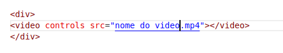
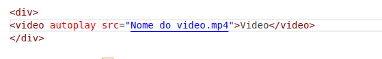

Para Adicionar o video já baixado basta aplicar o comando
<video src="Nome do video.mp4"></video>
para colocar o Play no video colocamos o comando controls paraclicar e reproduzir ou colocamos autoplay para reproduziar
automaticamente quando a página carregar ficando
 ou 
Para configuração do video voltamos no cabeçalho da página dentro das tag <head> adicionamos
no video com width configuramos a largura do video, com height configuramos a altura do video e border colocamos uma borda se quiser
a div com text-align:center; colocamos o video ao centro podemos também colar a esquerda com left e a direita com right
Tarefa coloque 2 videos em suas páginas sendo um com play e outrocom reprodução automática